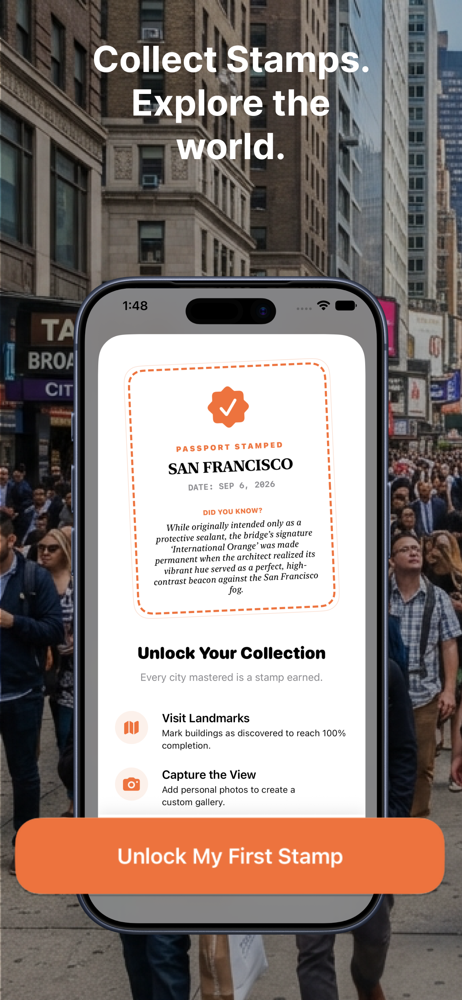
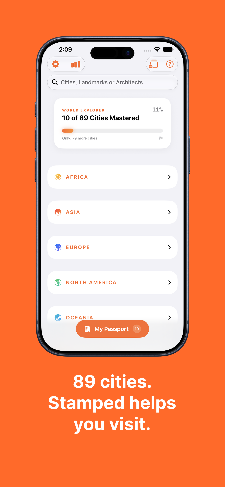
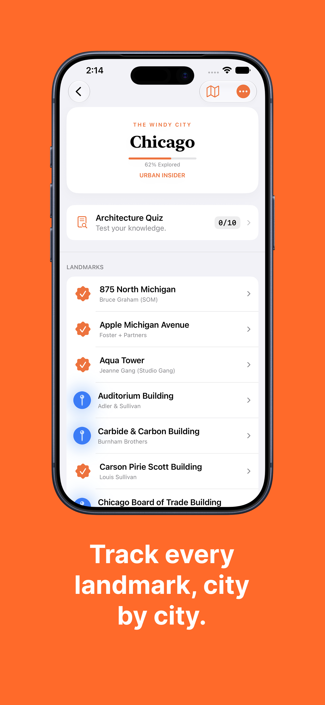
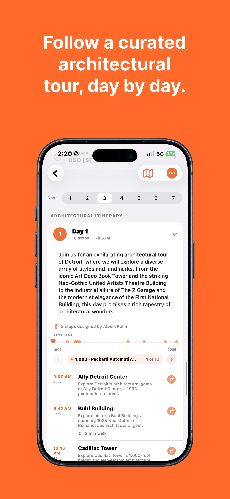
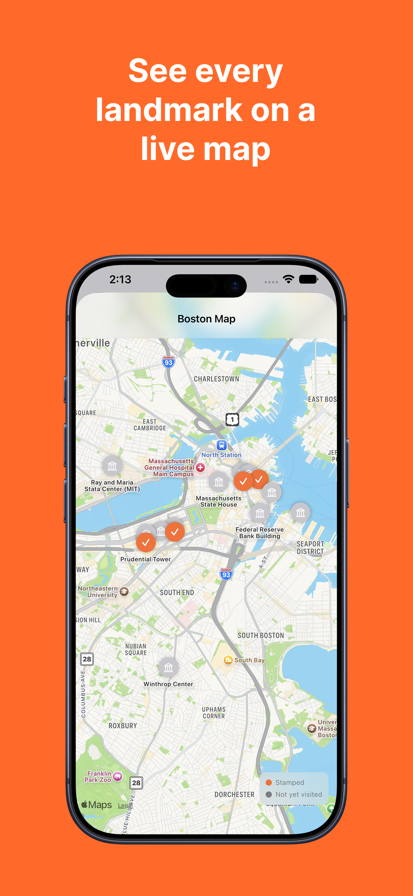
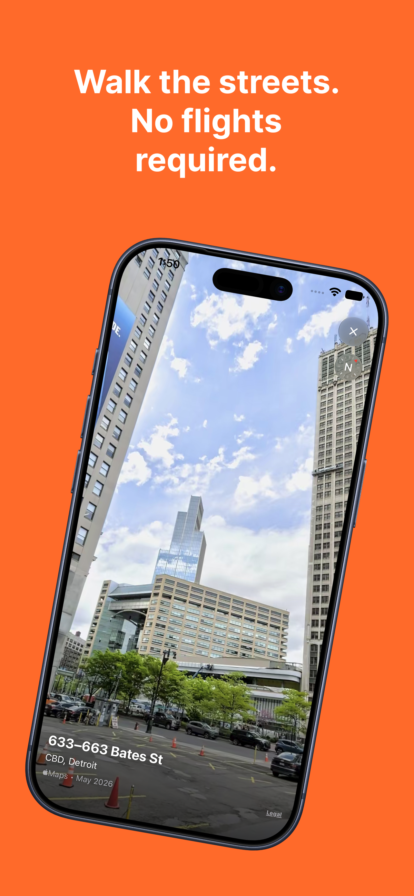
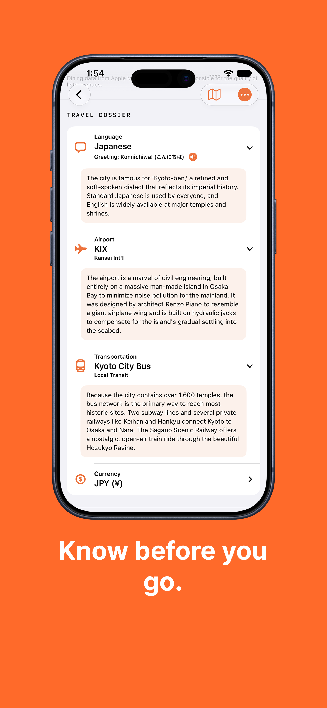
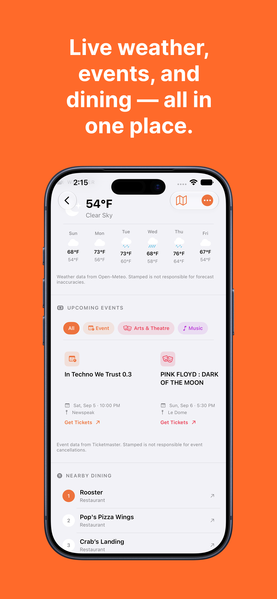
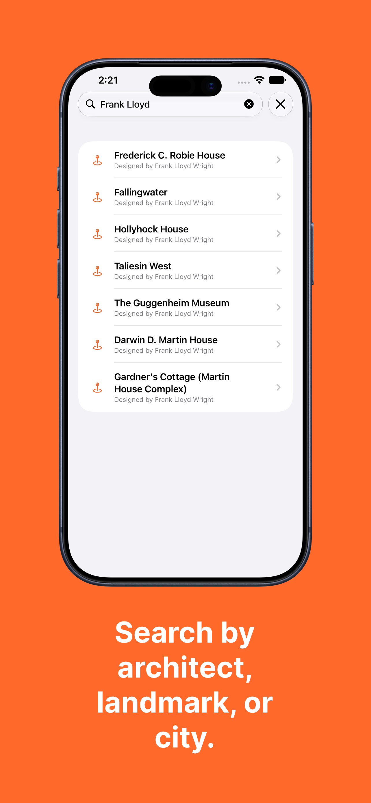
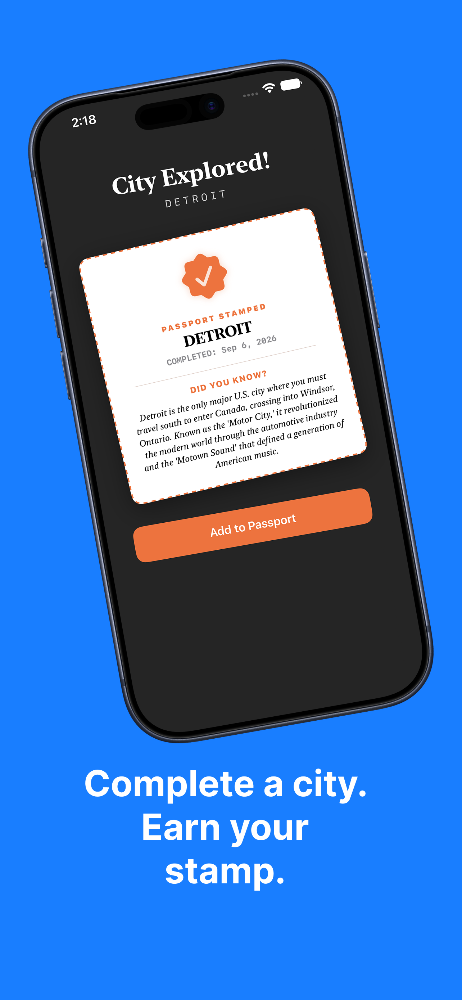

Stamped! — A City Passport
A SwiftUI iOS app for discovering and collecting architectural landmarks across 89 cities. Follow curated day-by-day tours, earn passport stamps when you complete a city, and get live weather, events, and dining for wherever you're exploring.
The Problem
Travel and architecture apps are either too passive (a static list of landmarks) or too overwhelming (full trip planners with accounts and subscriptions). There's a gap for people who want a more structured, rewarding way to explore a city's built environment — something that tells you what to see, helps you get there, and gives you a reason to come back. The goal was an app that turns architectural sightseeing into a collection game: earn a stamp for every city you complete, and build a passport you're proud of.
App Screenshots

Onboarding

World explorer — 89 cities

City detail + quiz

Curated daily itinerary

Live landmark map

Look Around street view

Travel dossier

Weather, events & dining

Search by architect

City stamp earned
How It Works
The app organizes the world into continents → countries → cities. A world progress card on the home screen shows how many of the 89 cities you've mastered and your percentage toward completing all of them. Tapping into a city shows a detail page with your progress percentage, a rank badge (like "Urban Insider"), a per-city architecture quiz, and the full landmark list.
Each city has a curated day-by-day architectural itinerary — a timeline of stops with walking times between them, organized chronologically by year built. From the city page, you can also pull up a MapKit map with orange pins for stamped landmarks and grey pins for unvisited ones, or jump into Apple Maps Look Around to virtually walk the streets before you arrive. When you visit every landmark in a city, a stamp celebration view fires and you earn a passport stamp with a "Did You Know?" fact about the city.
Beyond the architecture, each city surfaces a live travel dossier (local language, airport, transit, currency) alongside real-time weather from Open-Meteo, upcoming events filtered by category from Ticketmaster, and nearby dining from Apple Maps — so you can plan the rest of your day without leaving the app.
Features
Africa, Asia, Europe, North America, and Oceania. Global progress tracker shows cities mastered and percentage to completion.
Complete every landmark in a city to earn an illustrated stamp. Each stamp includes a city fact and a date completed.
Curated architectural tours with stop counts, estimated durations, and walking times between each landmark.
MapKit map for each city with stamped vs. unvisited landmark pins. Tap any pin to navigate directly.
Apple Maps Look Around integration — virtually scout any landmark from street level before you visit.
Per-city 10-question quiz to test your knowledge of the buildings before and after you explore.
Local language with spoken greeting, airport code, transit options, and currency — one tap from any city page.
Real-time weather, filterable upcoming events, and nearby dining pulled fresh each time you open a city.
Search across all 89 cities by city name, landmark name, or architect — results appear instantly.
Exploration percentage drives a rank system per city — progress from Tourist to Urban Insider as you visit more landmarks.
Attach a personal photo to any landmark using the camera or photo library, saved locally to your passport entry.
High-contrast mode, reduce motion, VoiceOver labels, and localized spoken greetings via AVSpeechSynthesizer.
Live Data Sources
Three external APIs power the live city layer — each one fetched fresh per city visit so the data is always current:
Architecture
Stamped! is a pure SwiftUI app. The landmark and city content layer is embedded in code — BuildingRegistry maps each City to its landmark list, and CityData holds metadata like nicknames, airport codes, and local transit. This keeps the app fully functional offline for browsing, tracking, and navigation, with the live data layer (weather, events, dining) layered on top where a connection is available.
State flows through a central GlobalProgressManager — an ObservableObject singleton that owns all visited IDs and user-attached photos. Visited IDs persist in UserDefaults; photos are written as BuildingID.jpg files in the app's Documents directory and loaded back on startup. City rank and completion percentage are computed properties derived from the visited set, so they're always in sync without separate storage.
Settings like haptics, sound, high contrast, and reduced motion each live in @AppStorage — one line of persistence per toggle. The view hierarchy follows natural SwiftUI nesting: CityListView → CityDetailView → building detail and itinerary views, with PassportGalleryView accessible from a floating passport button throughout.
What Was Hard
The biggest design challenge was scope management. A travel app can expand infinitely — more cities, more data sources, more features. The answer was a strict rule: every screen had to serve the core loop (browse → visit → stamp). Weather, events, and dining made the cut because they answer "what do I do now that I'm here." Look Around made the cut because it answers "what does this building actually look like." Anything that didn't support one of those questions got cut.
Wiring MapKit pins to local progress state was subtler than expected. The map needs to reflect stamp state in real time as the user marks buildings visited — without re-fetching or re-rendering the whole annotation set. The solution was observing GlobalProgressManager directly in the map view so annotations update as @Published state changes, rather than passing a static snapshot.
The Ticketmaster integration required careful category filtering and graceful degradation — some cities have no upcoming events, and the UI had to handle empty states cleanly without making the screen feel broken. Same for Look Around: not every location has street-level imagery, so the app falls back to a standard map tile rather than showing a broken state.
App Store approval took multiple rounds. Apple scrutinized the camera usage string, the Ticketmaster deep links (which had to open in Safari rather than in-app to comply with guidelines), and the location permissions flow. Getting all three right simultaneously was the final hurdle before the app shipped.
Expansion Concept: Stamped! for MSU
After shipping, I documented a campus adaptation concept — Stamped! for Michigan State University — that reframes the same interaction model for freshman orientation. Cities become campus zones, buildings become dining halls and student services offices, and stamps become orientation completion badges. The pitch doc and HTML deck are in the project repo. The core argument: a working app framework already exists, the loop is proven, and a university pilot could start with 20–40 destinations.
The Outcome
Stamped! was the first solo SwiftUI product I took from zero to the App Store. Building it stretched across everything I knew at the time — MapKit, live APIs, local persistence, accessibility, and the full App Store submission process. The architecture decisions made here (observable singletons for shared state, computed properties over redundant storage, a strict content layer / state layer / UI split) became patterns I carried into every project after it. It's also the app that proved to me that a single developer can ship something genuinely polished — not just functional.